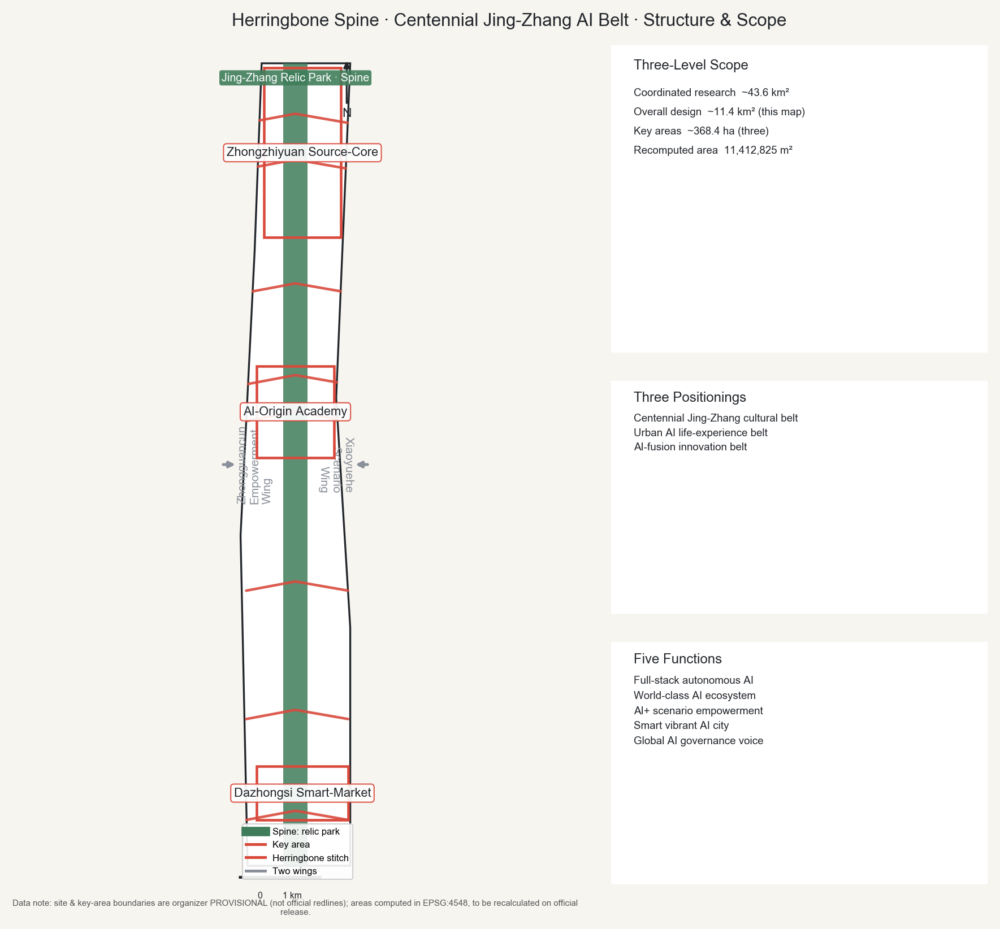
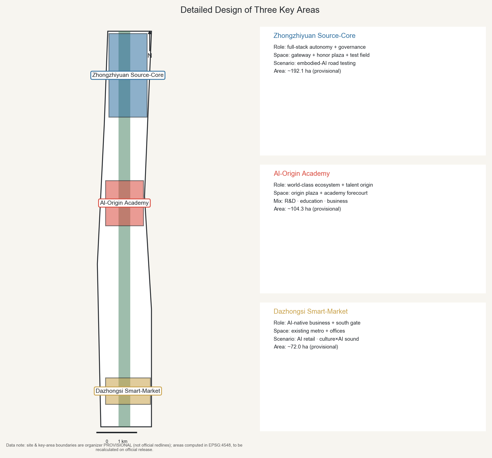
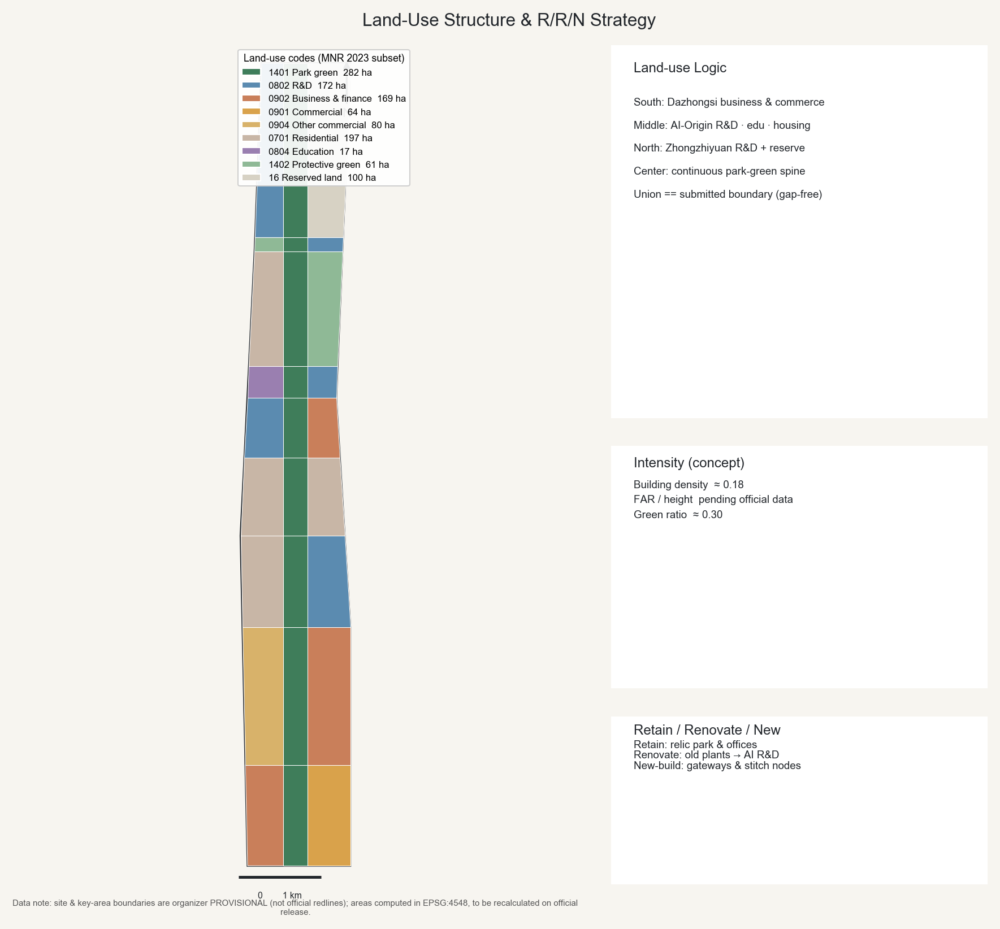
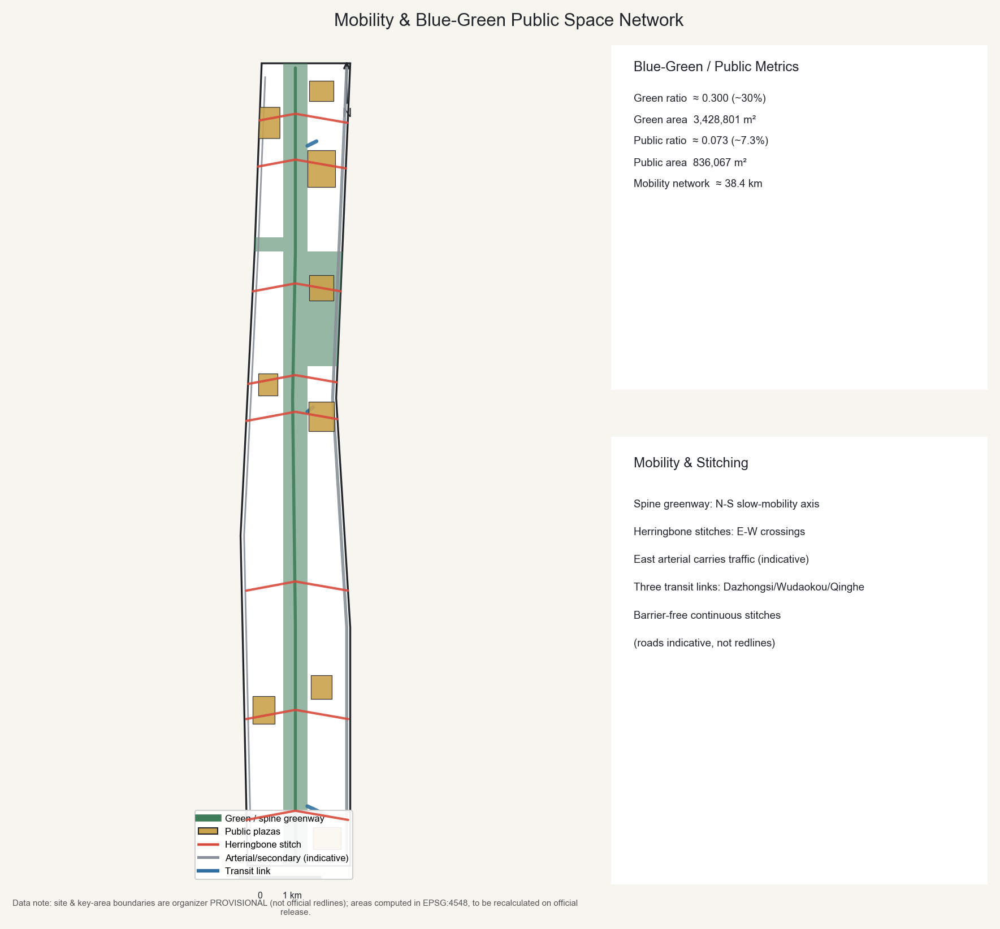
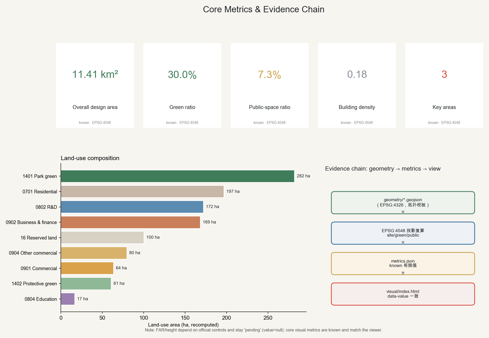

Centennial Jing-Zhang AI Innovation Belt · Urban Design
The Jing-Zhang railway herringbone switchback as motif; the relic park as a central north-south智脊 (smart spine); herringbone stitches suture east-west and connect north-south — putting people at the center of the AI belt.
One spine · three cores · two wings · multiple stitches.

≈ 43.6 km²
Industry & future-city research
≈ 11.4 km²
Regulatory-plan-depth urban design
recomputed 11,412,825 m²
≈ 368.4 ha
Zhongzhiyuan / AI-Origin / Dazhongsi
≈ 192.1 ha · provisional
≈ 104.3 ha · provisional
≈ 72.0 ha · provisional

Union = submitted boundary (gap-free, no overlap); MNR 2023 numeric-code subset.

| Code | Name | ha |
|---|---|---|
| 1401 | Park green | 282 |
| 0701 | Residential | 197 |
| 0802 | R&D | 172 |
| 0902 | Business/finance | 169 |
| 16 | Reserved | 100 |
| 0904 | Other commercial | 80 |
| 0901 | Commercial | 64 |
| 1402 | Protective green | 61 |
| 0804 | Education | 17 |
Spine greenway as N-S slow-mobility axis; herringbone stitches suture E-W; three transit links. Roads indicative, not redlines.

30.0% green ratio
3,428,801 m²
7.3% public ratio
836,067 m² · plaza network
Jing-Zhang railway × Zhongguancun × AI culture; wayfinding motif: herringbone + rail + signal.
Building density ≈ 0.18 (concept); massing terraces toward the spine; FAR/height pending official data.
2026–2028 · 369 ha
Dazhongsi south quick-start: market pilot, south gateway plaza, first stitch.
2029–2032 · 380 ha
AI-Origin community takes shape, suturing both park sides.
2033–2035 · 392 ha
Zhongzhiyuan full-stack core + reserved flexibility.
Investment/policy indicative, not commitments; concept suggestions for professional development.
≥10 scenario cards, 3 test/validation scenarios (SC-10/11/12), 6 personas; public generative-AI services keep human review and complaint channels.
| ID | Scenario | Spatial host |
|---|---|---|
| SC-01 | AI park guide | 智脊 Spine |
| SC-02 | Accessible mobility companion | 缝合连廊 Stitch |
| SC-03 | Low-speed delivery/patrol | 支路 Local |
| SC-04 | Public-service copilot | 原点 Origin |
| SC-05 | AI-native retail | 大钟寺 Market |
| SC-06 | Urban sensing | 智脊 Spine |
| SC-07 | Developer evaluation | 众智园 Core |
| SC-08 | Cultural memory | 青龙桥 / 大钟寺 |
| SC-09 | Public-safety review | 全域 Belt |
| SC-10 | Test: embodied AI | 测试场 Field |
| SC-11 | Test: low-speed AV | 场景翼 Wing |
| SC-12 | Test: governance sandbox | 原点 Origin |

Goals, scope levels, overall & key-area tasks are mapped in compliance_matrix.json.
Contributor self-check gates (deterministic · bilingual · spatial · visual · professional).
Provisional note: boundaries are temporary; recalculate on official release.